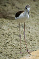
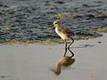
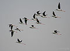
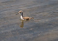
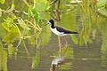

The black-winged stilt, common stilt, or pied stilt (Himantopus himantopus) is a widely distributed very long-legged wader in the avocet and stilt family (Recurvirostridae). Opinions differ as to whether the birds treated under the scientific name H. himantopus ought to be treated as a single species and if not, how many species to recognize. The scientific name Himantopus comes from the Greek meaning "strap foot" or "thong foot". Most sources today accept 2–4 species.
Description
|
|
This section does not cite any references or sources. (March 2013) |
Adults are 33–36 cm long. They have long pink legs, a long thin black bill and are blackish above and white below, with a white head and neck with a varying amount of black. Males have a black back, often with greenish gloss. Females' backs have a brown hue, contrasting with the black remiges. In the populations that have the top of the head normally white at least in winter, females tend to have less black on head and neck all year round, while males often have much black, particularly in summer. This difference is not clear-cut, however, and males usually get all-white heads in winter.
Immature birds are grey instead of black and have a markedly sandy hue on the wings, with light feather fringes appearing as a whitish line in flight.
 |
Calls of H. h. himantopus
Recorded in China
|
| Problems playing this file? See media help. | |
Taxonomy and systematics
The taxonomy of this bird is still somewhat contentious. Some describe as many as five distinct species; others consider some or all of these to be subspecies. In addition, two dubious subspecies are also sometimes listed, but not as independent species. In the most extensive circumscription, with one species and 5–7 subspecies, this bird is often called common stilt. The name black-winged stilt on the other hand can specifically refer to the Old World nominate subspecies. The commonly accepted taxa are:
- W Europe and Mediterranean region to Central Asia, sub-Saharan Africa and Madagascar, South and Southeast Asia; localized breeder in East Asia (e.g. Taiwan) but more widespread during winter; has become a regular migrant to the Marianas and Saipan and sometimes is seen on other islands in western Micronesia (e.g. Koror, Ngeriungs Islet and Peleliu of Palau) since the late 20th-century. NW populations migrate south to Africa in winter.
- Head and neck vary from all-white to white with all-black cap and hindneck, usually with white band across upper back. Sometimes vestigial open black chest band.
- Black-necked stilt (Himantopus himantopus mexicanus, Himantopus mexicanus mexicanus or H. mexicanus) (P.L.S.Müller, 1776)
- Southern North America through Central America and Caribbean to N Peru and NE Brazil. Northernmost populations migrate south in winter. Intergrades with white-backed stilt in C Brazil.
- Head and neck always white with black cap down to the eyeline, white spot above eye, black hindneck. Usually no white band across upper back. Often vestigial open black chest band.
- White-backed stilt (Himantopus himantopus melanurus, Himantopus mexicanus melanurus or H. melanurus) (Vieillot, 1817)
- South America from C Peru and N Chile to SE Brazil and south to SC Argentina. Intergrades with black-necked stilt in C Brazil.
- Head and neck usually white with black hindneck and a black line from the nape to the eye. Usually has open black chest band and a white band across upper back.
- White-headed stilt, pied stilt, or (New Zealand) poaka (Himantopus himantopus leucocephalus or H. leucocephalus) (Gould, 1837)
- Java to New Guinea, Australia and New Zealand. Southern population winter in the Philippines region.
- Head usually all-white, neck white, black behind and with open black chest band. Usually a white band across upper back.
- Hawaiian stilt or āeʻo (Himantopus himantopus knudseni, Himantopus mexicanus knudseni or H. knudseni) (Stejneger, 1887)
- Hawaiian Islands, where it is the only breeding shorebird
- Generally similar to black-necked stilt, but black on head and neck more extensive, usually extending below the eye.
Ecology and status
The breeding habitat of all these stilts is marshes, shallow lakes and ponds. Some populations are migratory and move to the ocean coasts in winter; those in warmer regions are generally resident or short-range vagrants. In Europe, the Black-winged Stilt is a regular spring overshoot vagrant north of its normal range, occasionally remaining to breed in northern European countries, for example in Britain in 1987.
These birds pick up their food from sand or water. They mainly eat insects and crustaceans.
The nest site is a bare spot on the ground near water. These birds often nest in small groups, sometimes with avocets.
The Hawaiian population is endangered due to habitat loss and probably also introduced predators. The IUCN recognizes 3 species at present, merging the Hawaiian and South American birds with the Black-necked Stilt; consequently, none of the three is listed as a threatened species. The Black-winged Stilt is one of the species to which the Agreement on the Conservation of African-Eurasian Migratory Waterbirds applies.
Immature plumages and flight view
-

Juvenile, Perth Zoo
-

Nestling of himantopus. The other taxa look the same at this age
-

Himantopus himantopus himantopus in flight
-

Fledgling (Laguna di Venezia, Italy)
-

Hawaiian Stilt on Kauai, Hawaii
Further reading
- Hayman, Peter; Marchant, John & Prater, Tony (1986): Shorebirds: an identification guide to the waders of the world. Houghton Mifflin, Boston. ISBN 0-395-60237-8
| Wikimedia Commons has media related to Himantopus mexicanus. |
- Black-winged Stilt videos, photos & sounds on the Internet Bird Collection
- Black-winged Stilt – Species text in The Atlas of Southern African Birds.
- Ageing and sexing (PDF; 2.7 MB) by Javier Blasco-Zumeta & Gerd-Michael Heinze